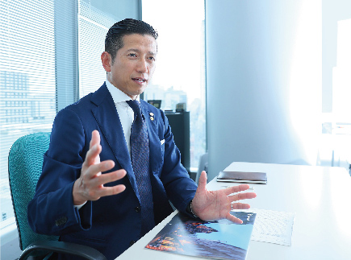

―― プルマサニュース以外でお客様への定期的なコンタクトはお持ちですか？
中村：それはバースデーコールです。年に一回はお客様の声を聞く。どういう状況になっているのか、どういう環境になっているのかを。昨年と現在のお客様の状況がどのように変化しているかを把握するには、バースデーコールが一番確実です。実は私も10年間はバースデーカードをお送りしていましたが、一方通行だと思うのです。その点、バースデーコールは所謂、双方向性といいますか、私が電話したら言葉が返ってきます。それは保険を見直したい、解約したい、あるいは追加で入りたい、紹介したい人がいるとか子どもが成長したとか、社会人になったとか退職したとかいろいろな情報、いい情報も悪い情報も生で聞こえる、その場で聞き取ることができるので、そういうことをしなければと入社10年を過ぎた頃から思いました。
今ではカスタマーサービスセンターがあるので直接そこに連絡を入れられるケースもありますが、当時は担当者としてカスタマーサービスセンターじゃなくて自分に言ってきてもらったらいいのに、ということも思いました。そこからバースデーコールにしよう、お客様の生の声を聞くようにしよう、となりました。
聞き手：バースデーコールのほか、さきほどお話を伺ったおハガキ以外に何かありますか？
中村：外部業者が発行している情報はがきみたいなものを、全員ではなく対象を限定して、法人経営者もしくは士業の方にお送りしています。この人はどうされているのだろう？と電話するのもいいのですが、相手やその時に応じて電話ではなくはがきでコンタクトを取ることもあります。
―― 中村さんはライフプランナーとして大変長いキャリアと実績を共にお持ちですが、保全に関する具体的な取り組み方は最初から変わりませんか？また、お客様はどのような関わり方を期待されているとお感じですか？
中村：これは変わらないです。担当者として当事者意識というものを強く持っています。「自分が担当者だ」ということです。もっと大きな枠で考えると、生命保険業界40数社ある中でプルデンシャル生命と出会い、中村将幸と出会って、そして私に保障を任せてもらえている、という感謝の念が根底にあります。ですので、今も昔も保全に対する姿勢は変わらないです。
またお客様の期待値ですが、これは「契約後の年数」によって様々かと思います。仮にご加入後1～2年といったお客様であれば、契約内容を確認される方はあまりおられません。しかし、お客様のお仕事に関するご相談など、保険以外の情報提供についてご要望をいただくことはあります。これは、バースデーコールやアンケートはがきがきっかけとなることが多いです。相応の年数が経過したお客様には、「契約内容の見直しを」と私から促すこともありますが、ほとんどの場合、お客様からお申し出いただくことが多いです。アンケートにお答えいただいたご要望に沿って、追加のご契約をお預かりすることも多々あります。
聞き手：私どものアンケートに、具体的なご要望事項をお書きいただけるということですか？
中村：はい。子どもさんの学費、年金や介護に関するご相談など、お客様のご要望を汲み取るうえでアンケートは非常に役立っています。それだけに、このアンケートの質問項目は毎年同じものではなく、その時その時の旬を意識して、常にお客様にご興味をもっていただけるような工夫を凝らすことが大切だと思います。
―― 保全活動を継続していく「コツ」があれば教えてください。
中村：これは「コツ」ではなく、やはり「システム化」すべきものかと思います。お客様に対する「お客様のことを深く知りたい」という強い想いを根底に、活動をシステム化していく。コツで続けていけるものではないと思います。
聞き手：鎌谷さんのお話をお伺いした際に、「シンプルに続けられるものが重要」だと仰っておられました。無理をせず一度始めたらずっと続けられるものでなければ、と。
中村：その通りです。私も最初「かわら版」を作っていた頃、周囲から「継続性がなかったら途中でやめることになるので、逆にやらない方がいいよ。」と言われました。当時私の支社では、同じような取り組みをする人は誰も居ませんでした。私はただ、ご加入後のお客様になかなかお会いしに行けないことが申し訳ない、という気持ちで始めています。結局、周りがどう言おうが「自分がやるか、やらないか」だけの話です。もちろん、きちんと継続できるものでなければダメです。
聞き手：保全は、最初に「やる」と決めてしまうことが肝要、ということでしょうか？
中村：私の場合「お客様のことを深く知りたい」、これだけです。言い換えると、私がお客様のファンなわけです。お客様が私のファンではなく、その逆です。私はお客様のファンだから、お客様も私のファンになってくれます。まずは、私がお客様に共感します。私自身はお客様から共感してもらおうとか、ファンになってもらおうとは思っていません。もし、ファンになってもらおうと思うのであれば、これ見よがしに自慢するようなことはしないですよね？多分、謙虚に振る舞うことになると思います。共感されるのではなく、まず私がお客様に共感する。だから私は、「中村さんって謙虚な人だな。」と思われようとは考えないのです。まず私がお客様のファンになって、それからお客様も「頑張っているな。」「いつも自慢新聞送ってくるけど、ちゃんとやることはやってくれているな。」と、そのように共感してくれるかどうかは分かりませんが、そうあるべきだと思っています。私がお客様のファンなのです。最初からファンにならないとダメだと思います。
聞き手：それはすごい…。つまり、中村さんがお客様のファンだからこそ、「お届けもの」も多くなるみたいなイメージですね。
中村：そういうことです。お客様が私のファンだから、と思うなら何もしなくていいと思います。保全は、お客様が喜ぶというよりも、どちらかというと私のほうが喜んでいます。いわば与える側の方が、喜びが深いわけです。人の役に立ちたいという、人間の根本的な欲求ですね。人の役に立っていることがわかると、自分の存在意義や価値が見出せます。私たちの仕事は、断られたり電話に出てもらえなかったりとか「自分の存在意義って何だろうな。」と思う時があります。しかし、バースデーコールや通信物をお送りすると、すぐに効果はわかりにくいものの年を追うごとに「毎年ありがとうね」と喜んでいただけます。それは自分の存在意義を明確に見出すことでもあるのです。
聞き手：新規契約の活動が忙しくて保全活動に時間を割けないという声を時々伺うことがありますが、仮にこのようなことを後輩の方々から相談された場合、中村さんはどのようなアドバイスをしますか？
中村：担当者としての意識を再確認して、いいものを勧めたらそれで終わりではなく、保険という商品とライフプランナーが一体化して成立するわけだから「お前、顔忘れられてないか？」とか「担当者の存在がお客様に浸透しているか？」ということを問うと思います。
「私と、保全活動」 バックナンバー
2019年


2020年


2021年


※職位、略歴は取材時の情報です